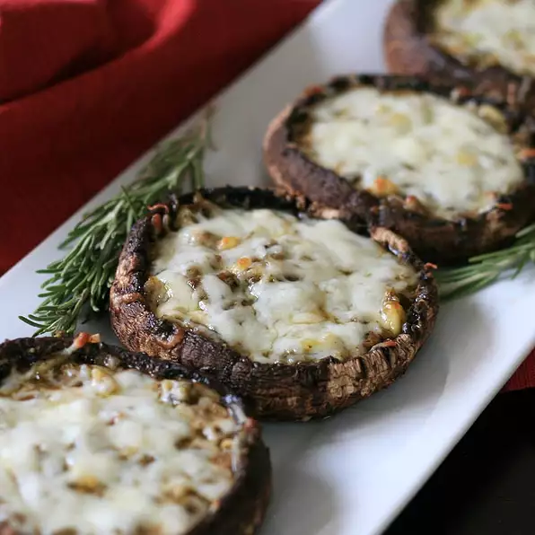

Pesto-Stuffed Grilled Portobellos

Description
Pesto-stuffed grilled portobellos make for the perfect summer outdoor meal. It stands alone as vegetarian fare if you serve it with fresh fruit (such as watermelon chunks and blueberries); I love it with cedar-plank grilled salmon as well. You will think you've died and gone to heaven.
Ingredients:
- 6 portobello mushrooms
- 1 tablespoon olive oil
- 1 small shallot, minced
- 1 clove garlic, minced
- 1 splash Chardonnay wine, or as desired
- 3 tablespoons pesto
- 2 tablespoons pine nuts
- ½ cup shredded Italian 3-cheese blend
Steps:
- Remove stems from mushrooms and finely chop stems.
- Heat olive oil in a skillet over medium heat; cook and stir chopped mushroom stems, shallot, and garlic until softened, about 5 minutes. Pour wine into the skillet; cook and stir mixture using a wooden spoon until liquid is evaporated, 1 to 2 minutes. Cool mixture to room temperature, about 10 minutes.
- Preheat an outdoor grill for medium heat and lightly oil the grate.
- Brush the olive oil mixture over the top each mushroom and place, top-side up, on a grilling pan. Mix pesto and pine nuts with the mushroom stem mixture together in a bowl; spoon into each mushroom. Sprinkle Italian cheese blend over the filling.
- Grill mushrooms on the preheated grill until edges are blackened and stuffing is bubbling, about 10 minutes.